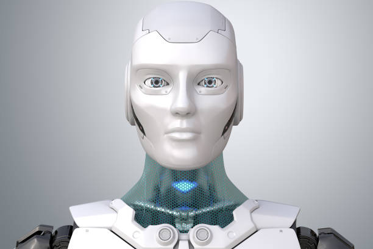
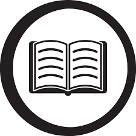
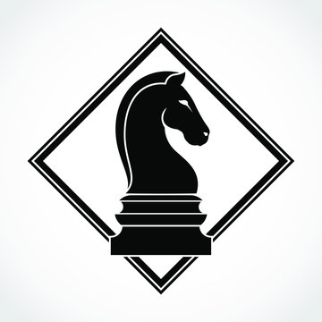
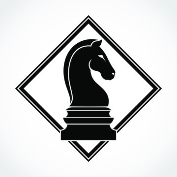

Erik Jurado
Ing. Electromecánico/Fronr-end developer/UX designer
Cel: 248 161 70 **
email: jurado.erik@mail.com
Github portfolio: (paste link)
Objetivo
Desarrollar y crecer mis habilidades en la industria, poner a su servicio mis conocimientos y aptitudes en mi entera disposición por colaborar en proyectos y ser un elemento de valía para su equipo de trabajo.
Experiencia profesional
Técnico de producción - Grupo de inyección IMG
- Mantenimiento a tableros eléctricos de control y potencia
- Instalación y modificación de equipo neumático.
- Monitoreo de compresores, pulmones, sistema eléctrico y neumático
- Mantenimiento a maquinaria de inyección de plástico, preforma, soplado y pigmentación.
Técnico especialista -Industrias unidas Maritex
- Mantenimiento preventivo a tarjetas electrónicas y motores eléctricos para maquinaria de tejido de toallas
- Supervisión de calidad del tejido de la máquina
- Instalacion y adaptaciones con sensores
- Atención de fallas en el transcurso del turno
Técnico especialista-PPA Puebla
- Mantenimiento preventivo a tarjetas electrónicas y motores eléctricos para puertas automáticas
- Cálculo e instalación de cercas electrificadas
- Instalacion y adaptaciones con sensores inteligentes
- Instalación de protecciones y puesta a tierra
Estudios profesionales
Ingeniería electromecánica
Instituto Tecnológico Superior de San Martín Texmelucan 2016-2020
Técnico en Soporte y Mantenimiento de equipos de cómputo
CBTis 252 2013-2016
Programación básica PLC Siemens
ICATEP Plantel Texmelucan 2019-2020
Habilidades duras
- Mantenimiento preventivo y correctivo
- Instalaciones eléctricas y mecánicas
- Programación de PLC
- MS Oficce
- TIA Portal
- CATIA V5
Habilidades transversales
- Facilidad de adaptación
- Pensamiento estratégico
- Buena comunicación
- Trabajo en equipo
- Autodidacta
- Iniciativa
Elegibilidad
Idiomas: Ingles B2
Disponibilidad para viajar
Intereses
 
